library(foreign)library(readxl)library(RISEkbmRasch) # devtools::install_github("pgmj/RISEkbmRasch")library(grateful) library(ggrepel)library(car)library(kableExtra)library(readxl)library(tidyverse)library(eRm)library(mirt)library(psych)library(ggplot2)library(psychotree)library(matrixStats)library(reshape)library(knitr)library(cowplot)library(formattable) library(glue)library(hexbin)library(skimr)### some commands exist in multiple packages, here we define preferred ones that are frequently usedselect <- dplyr::selectcount <- dplyr::countrecode <- car::recoderename <- dplyr::rename# file paths will need to have "../" added at the beginning to be able to render document# get itemlabelsitemlabels <-read_excel("../data/Itemlabels.xlsx") %>%filter(str_detect(itemnr, pattern ="pt")) %>%select(!Dimension)spssDatafil <-"../data/2023-04-26 Prevent OSA-enkat.sav"# read SurveyMonkey datadf <-read.spss(spssDatafil, to.data.frame =TRUE) %>%select(starts_with("q0013"),q0001,q0002,q0003,q0004) %>%rename(Kön = q0002, Ålder = q0001,Bransch = q0003,Hemarbete = q0004)# SPSS format provides itemlabels too, we can save them in a dataframespssLabels <- df %>%attr('variable.labels') %>%as.data.frame()dif.kön <- df$Köndif.ålder <- df$Ålderdif.bransch <- df$Branschdif.hemarbete <- df$Hemarbetedf <- df %>%select(starts_with("q0013"))names(df) <- itemlabels$itemnr
10.1 Items
Code
itemlabels %>%kbl_rise(width =45)
itemnr
item
pt1
Jag har en positiv känsla när jag kommer till jobbet.
pt2
Jag känner mig delaktig i gemenskapen på min arbetsplats.
pt3
Jag kan begå misstag utan att det hålls emot mig.
pt4
Jag kan öppet diskutera olika typer av svårigheter.
pt5
Jag blir inkluderad även om jag tycker annorlunda.
RIdemographics(dif.ålder,"Ålder") # kanske även fixa en figur?
Ålder
n
Percent
18-29
22
3.8
30-39
103
17.8
40-49
175
30.2
50-59
215
37.1
60+
64
11.1
Code
RIdemographics(dif.bransch,"Bransch")
Bransch
n
Percent
Kontorsarbete (oavsett bransch)
284
49.1
Industri
26
4.5
Hotell, restaurang, service
8
1.4
Handel
16
2.8
Skola, utbildning
67
11.6
Vård, omsorg
99
17.1
Byggverksamhet
7
1.2
Annat
71
12.3
Code
RIdemographics(dif.hemarbete,"Antal dagar med arbete hemifrån")
Antal dagar med arbete hemifrån
n
Percent
En dag
136
23.5
Två dagar
105
18.1
Tre dagar
35
6.0
Fyra dagar
10
1.7
Fem dagar
2
0.3
Jag arbetar aldrig eller sällan hemifrån
291
50.3
10.2.1 Svarsbortfall items
Vi filtrerar bort respondenter som har färre än två svar på frågorna i delskalan.
Code
# If you want to include participants with missing data, input the minimum number of items responses that a participant should have to be included in the analysis:min.responses <-2scale.items <- itemlabels$itemnr# Select the variables we will work with, and filter out respondents with a lot of missing datadf.omit.na <- df %>%filter(length(scale.items)-rowSums(is.na(.[scale.items])) >= min.responses)RImissing(df.omit.na,"pt")
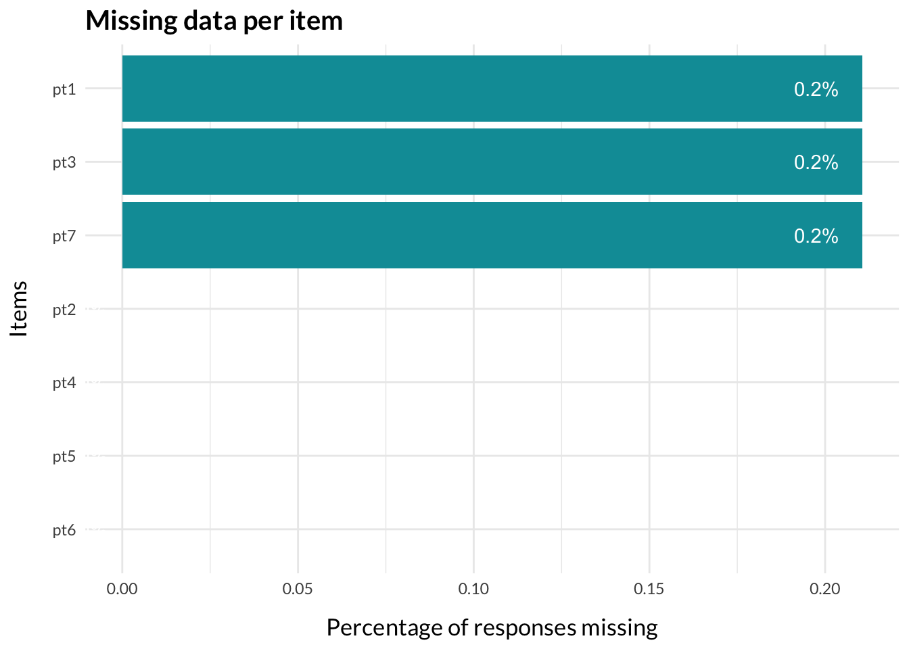
Vi har extremt få saknade svar, och tar därför bort respondenterna som inte har kompletta svar.
RIitemfitPCM2(df.omit.na, samplesize =250, nsamples =32, cpu =8)
OutfitMSQ
InfitMSQ
OutfitZSTD
InfitZSTD
pt1
1.192
1.117
1.606
1.165
pt2
0.866
0.872
-1.156
-1.372
pt3
1.013
1.027
0.248
0.268
pt4
0.847
0.809
-1.539
-1.966
pt5
0.63
0.614
-3.924
-4.388
pt6
0.862
0.864
-1.559
-1.415
pt7
0.811
0.799
-1.872
-2.066
Code
RIpcmPCA(na.omit(df.omit.na))
PCA of Rasch model residuals
Eigenvalues
1.89
1.60
1.09
0.96
0.77
Code
RIresidcorr(df.omit.na, cutoff =0.2)
pt1
pt2
pt3
pt4
pt5
pt6
pt7
pt1
pt2
0.09
pt3
-0.26
-0.14
pt4
-0.27
-0.27
0.06
pt5
-0.37
-0.1
0.04
0.1
pt6
-0.18
-0.28
-0.36
-0.25
-0.18
pt7
-0.11
-0.25
-0.4
-0.28
-0.19
0.33
Note:
Relative cut-off value (highlighted in red) is 0.045, which is 0.2 above the average correlation.
Code
RIloadLoc(df.omit.na)
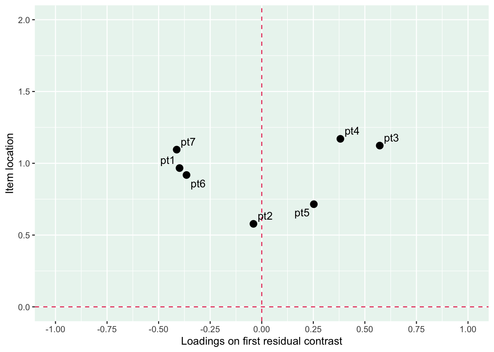
Code
RIitemCats(df.omit.na, items ="all")
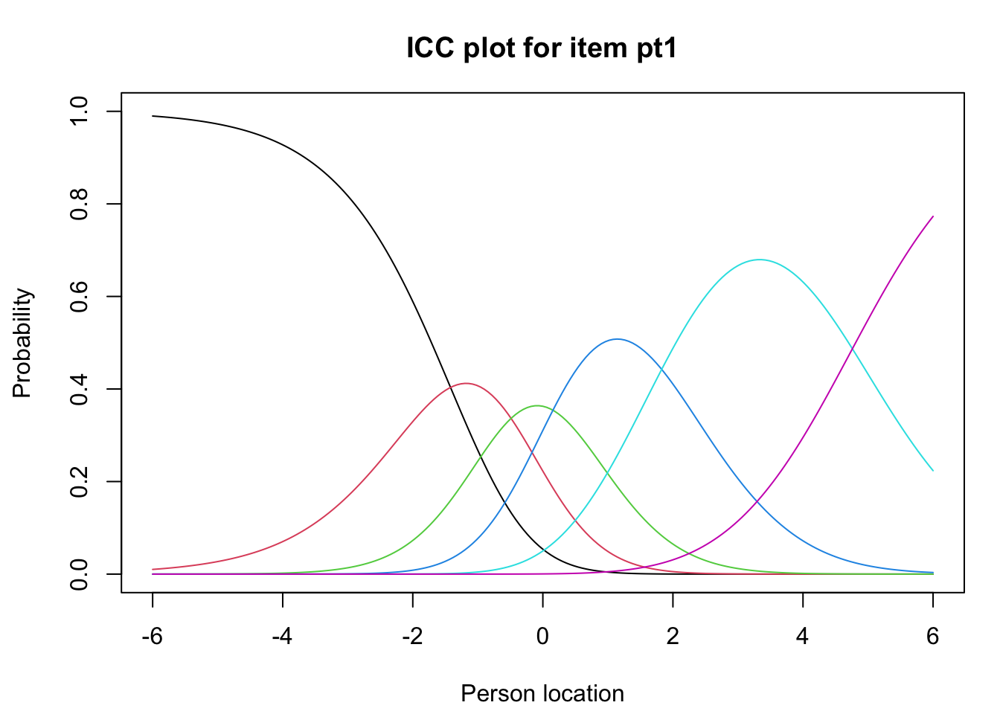
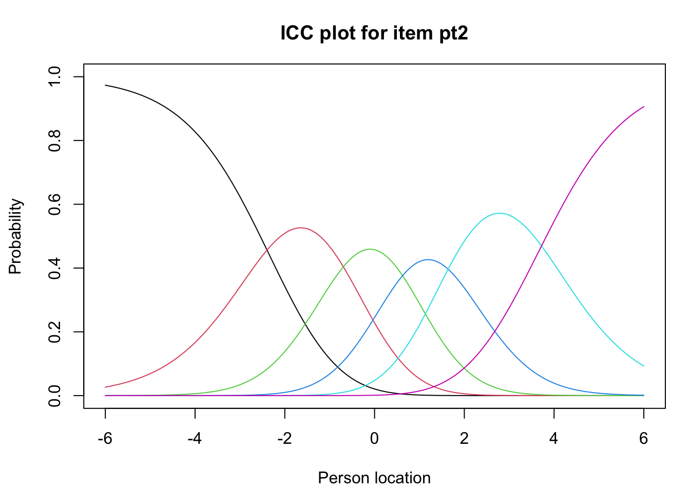
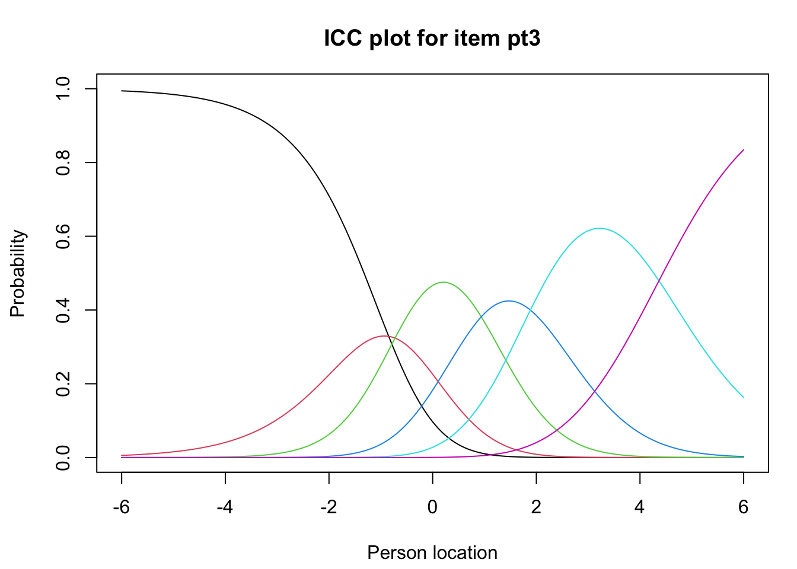
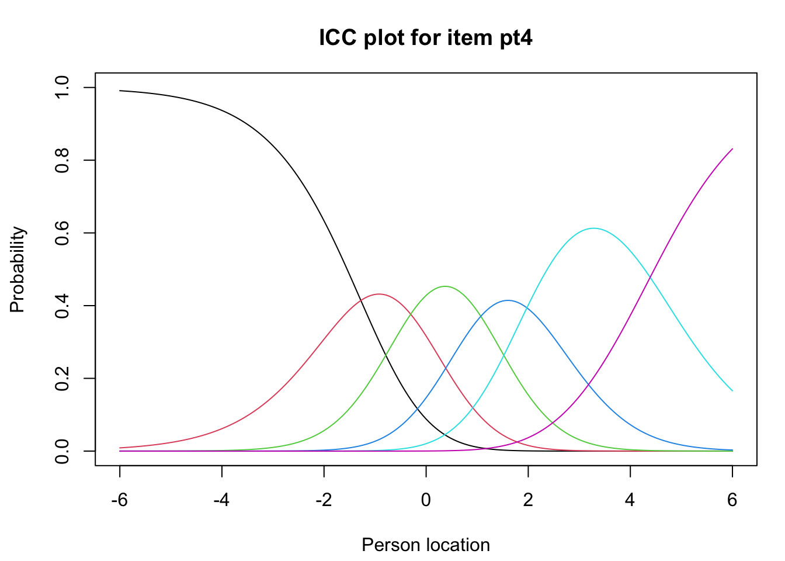
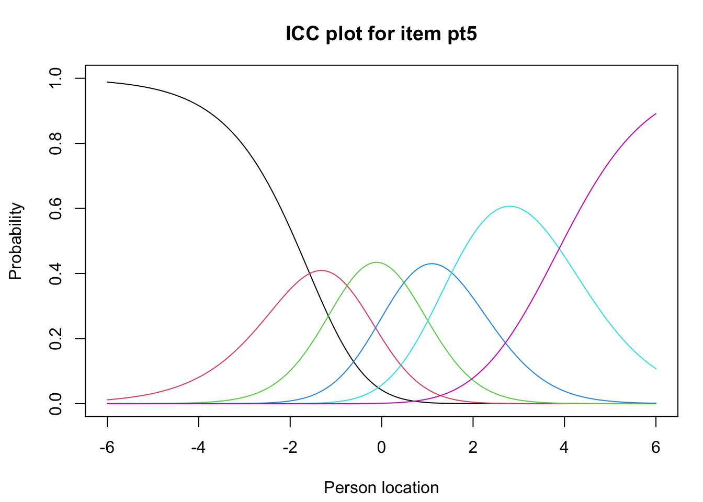
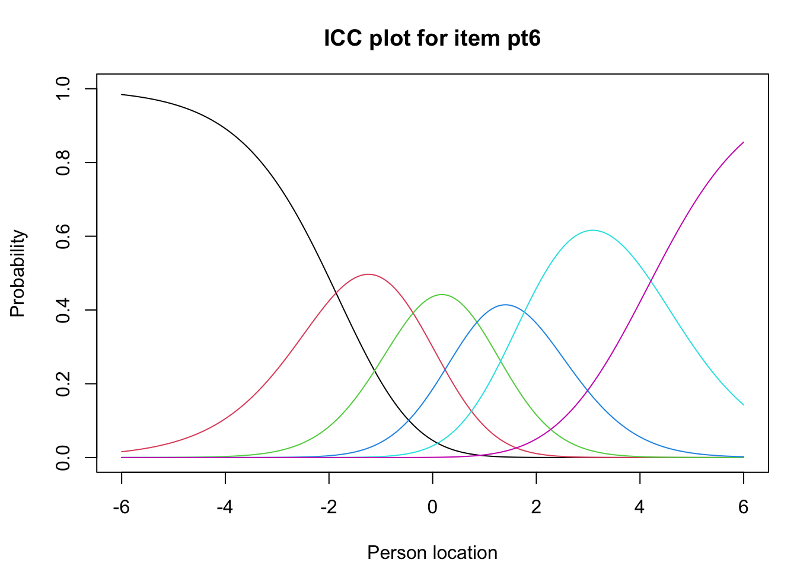
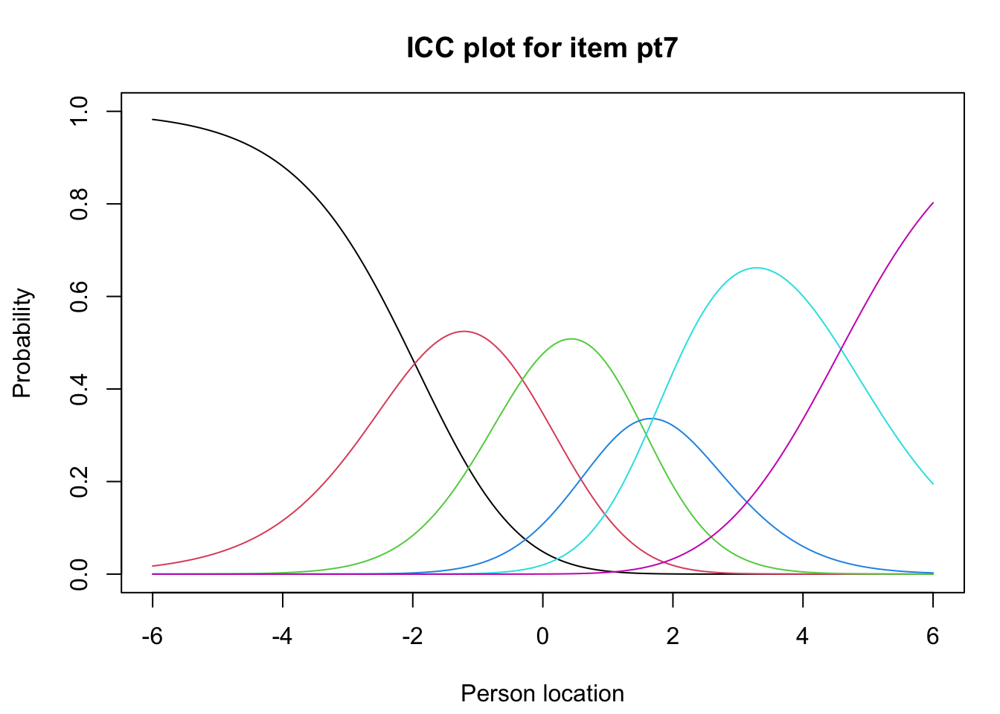
Code
# increase fig-height above as needed, if you have many itemsRItargeting(df.omit.na, xlim =c(-5,5))
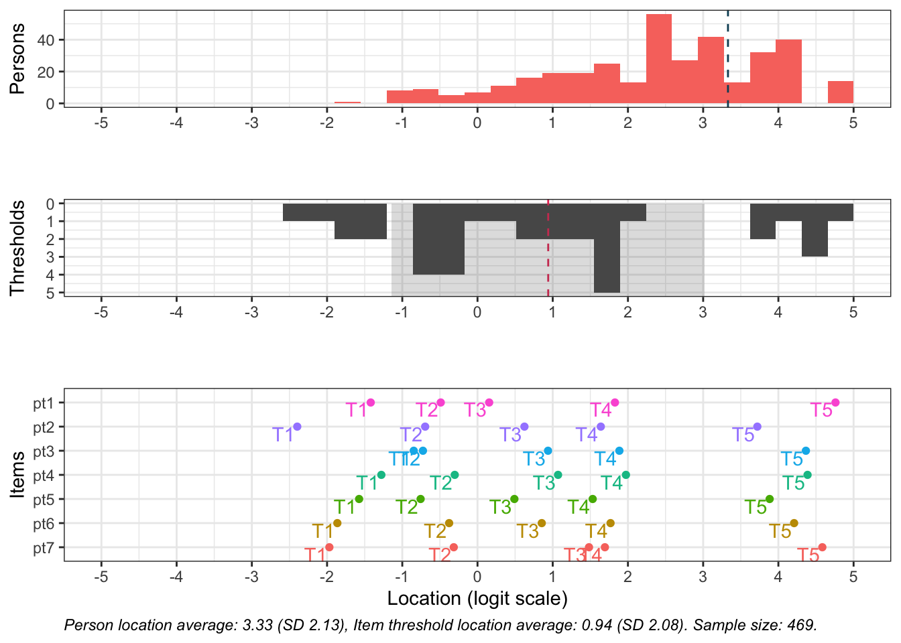
Code
RIitemHierarchy(df.omit.na)
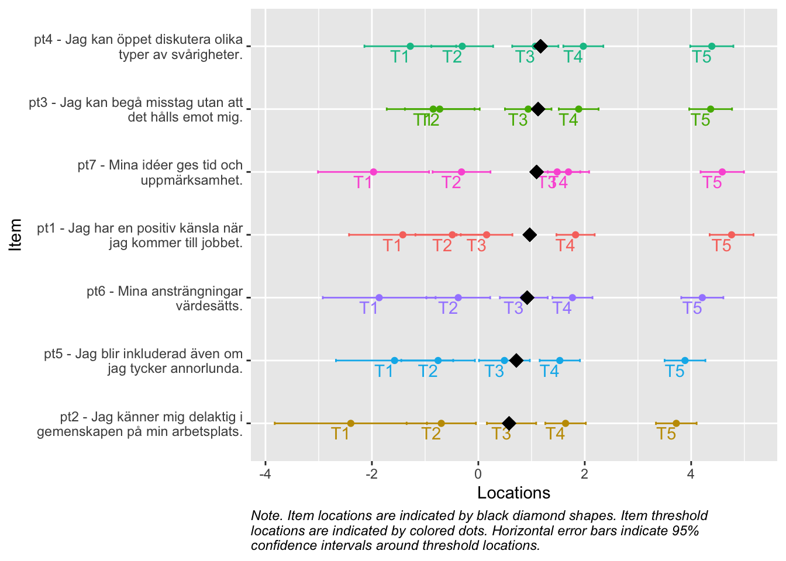
Det finns några residualkorrelationer som avviker, och item 5 är något låg i item fit. Största residualkorrelationen (med stor marginal) är mellan items 6 och 7. Eftersom item 7 har lite problem med svarskategorierna tas den bort.
Code
# create vector with eliminated itemsremoved_items <-c("pt7")# select all items except those removeddf2 <- df.omit.na %>%select(!any_of(removed_items))
10.4 Rasch-analys 2
itemnr
item
pt1
Jag har en positiv känsla när jag kommer till jobbet.
pt2
Jag känner mig delaktig i gemenskapen på min arbetsplats.
pt3
Jag kan begå misstag utan att det hålls emot mig.
pt4
Jag kan öppet diskutera olika typer av svårigheter.
pt5
Jag blir inkluderad även om jag tycker annorlunda.
RIitemfitPCM2(df2, samplesize =250, nsamples =32, cpu =8)
OutfitMSQ
InfitMSQ
OutfitZSTD
InfitZSTD
pt1
0.974
0.916
-0.126
-0.595
pt2
0.751
0.732
-2.621
-2.933
pt3
0.846
0.853
-1.665
-1.416
pt4
0.755
0.716
-2.889
-3.15
pt6
0.905
0.885
-0.812
-1.231
Code
RIpcmPCA(na.omit(df2))
PCA of Rasch model residuals
Eigenvalues
1.63
1.34
1.05
0.98
0.00
Code
RIresidcorr(df2, cutoff =0.2)
pt1
pt2
pt3
pt4
pt6
pt1
pt2
0
pt3
-0.38
-0.23
pt4
-0.35
-0.33
0.01
pt6
-0.19
-0.26
-0.34
-0.19
Note:
Relative cut-off value (highlighted in red) is -0.026, which is 0.2 above the average correlation.
Code
RIloadLoc(df2)
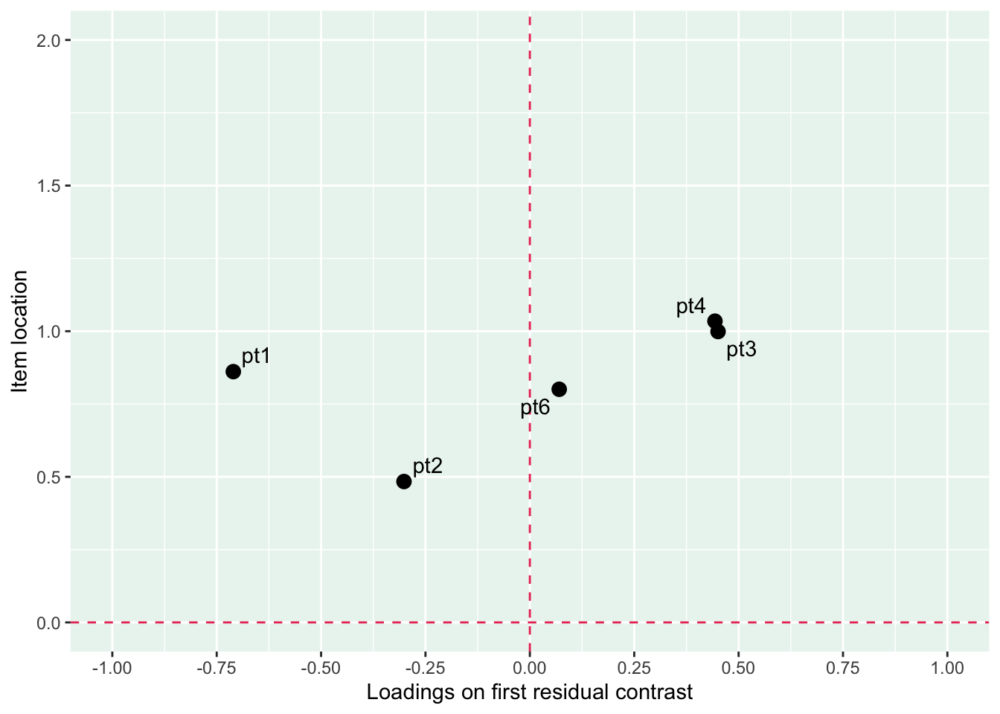
Code
# increase fig-height above as needed, if you have many itemsRItargeting(df2)
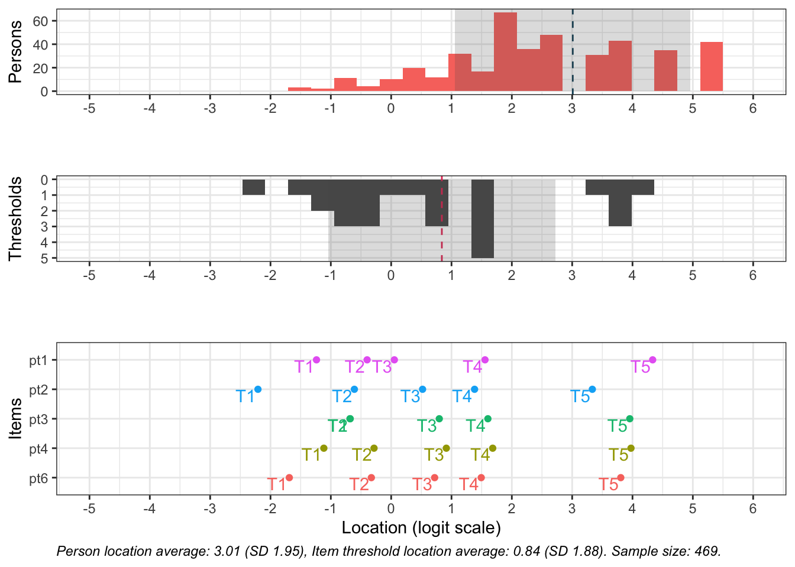
Code
RIitemHierarchy(df2)
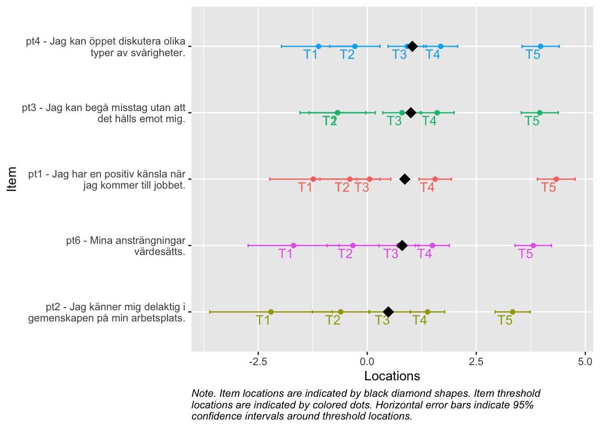
10.5.1 Targeting
Code
# increase fig-height above as needed, if you have many itemsRItargeting(df2)
Figur 10.1: Targeting för området Psykologisk trygghet
Denna uppsättning items fungerar väl tillsammans.
10.6 DIF-analysis
En DIF-analys bör inte inkludera svarskategorier med för få svar. Därför har svarskategorier med färre än 50 svar antingen exkluderas eller slagits ihop med andra svarskategorier (se avsnittet om bakgrundsdata för exakt antal svar per ordinarie kategori). DIF-variablerna omkodades till att innehålla följande kategorier:
Kön: man, kvinna
Ålder: 30-39, 40-49, 50-59, 60+
Bransch: kontorsarbete, ej kontorsarbete
Hemarbete: aldrig eller sällan, en dag, minst två dagar
Koden nedan specificerar exakt hur omkodningen gick till.
Code
# Omkodning för köndif.kön <-recode(dif.kön,"'Annat'=NA;'Vill ej uppge'=NA")# Omkodning för ålderdif.ålder <-recode(dif.ålder,"'18-29'=NA")# Omkodning för branschdif.bransch <-recode(dif.bransch,"'Industri'='Ej kontorsarbete';'Hotell, restaurang, service'='Ej kontorsarbete';'Handel'='Ej kontorsarbete';'Skola, utbildning'='Ej kontorsarbete';'Vård, omsorg'='Ej kontorsarbete';'Byggverksamhet'='Ej kontorsarbete';'Annat'='Ej kontorsarbete'")#Omkodning för hemarbetedif.hemarbete <-recode(dif.hemarbete,"'Fem dagar'='Minst två dagar';'Fyra dagar'='Minst två dagar';'Tre dagar'='Minst två dagar';'Två dagar'='Minst två dagar'")